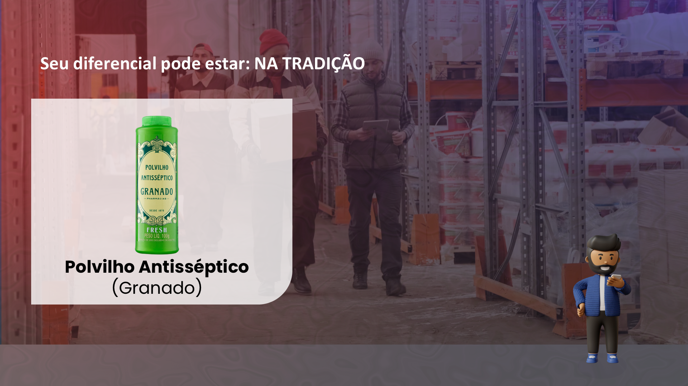
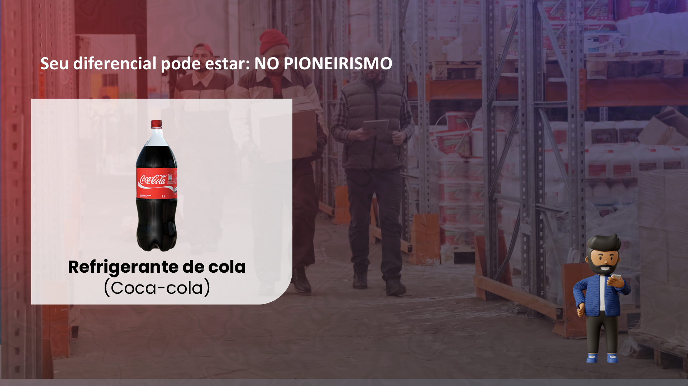
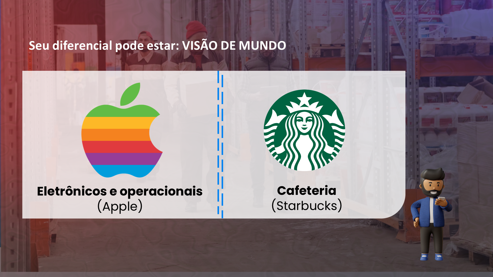
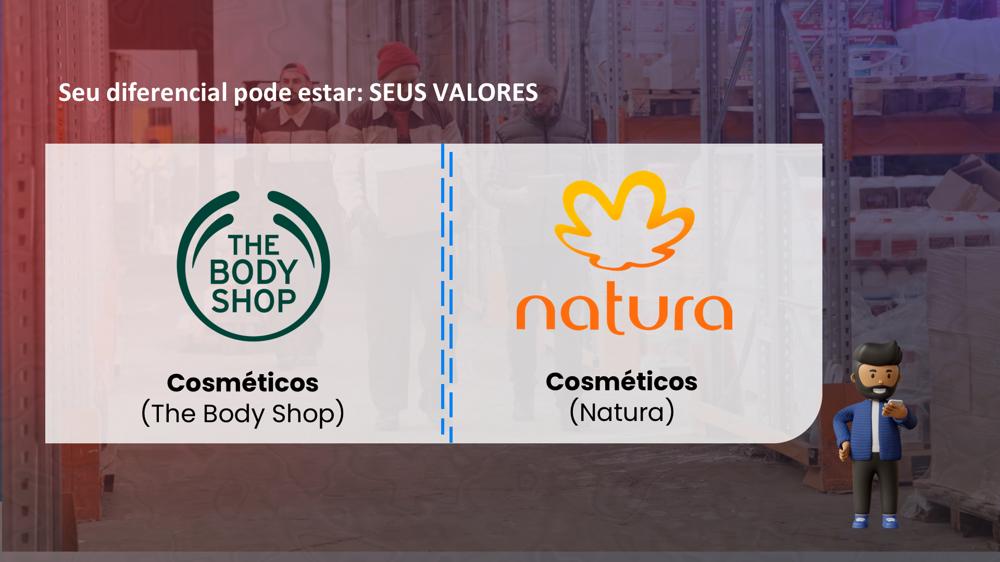
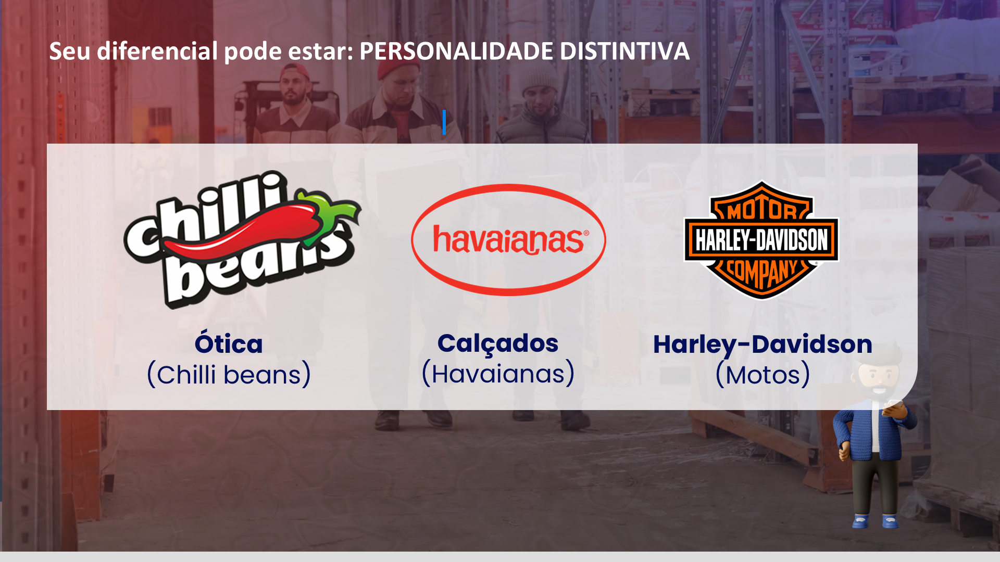

mindmap
root((Branding<br/>no Agro))
Qualidade real
Produto superior
Processo documentado
Certificações
Diferenciação autêntica
Terroir e origem
Método de produção
História e tradição
Narrativa poderosa
Origem
Desafio
Impacto
Foco comercial
Público definido
Canais escolhidos
Preço justo
Consistência
Plataforma de marca
Tom de voz
Experiência alinhada
14 Cases de Branding no Agro Brasileiro
Teoria sem prática é discurso vazio. Neste capítulo final, analisamos casos reais de marcas do agronegócio brasileiro que aplicaram, com sucesso ou com tropeços, os princípios de branding discutidos ao longo do livro. Cada caso é examinado à luz dos conceitos das três partes da obra.
14.1 Por que estudar cases

A análise de casos reais cumpre três funções. Primeiro, demonstrar que funciona, pois branding no agro não é teoria distante, mas prática que gera resultados mensuráveis. Segundo, inspirar por semelhança, mostrando que empresas com perfil parecido ao do leitor conseguiram se diferenciar. Terceiro, aprender com erros, identificando armadilhas que podem ser evitadas.
Os casos a seguir foram selecionados para cobrir diferentes portes, produtos, regiões e estágios de maturidade de marca.
14.2 Case 1, Café de origem: da commodity ao terroir
14.2.1 O contexto
Um grupo de cafeicultores da região do Cerrado Mineiro produzia cafés de qualidade reconhecida em concursos, mas vendia a produção a granel para traders que diluíam a identidade de origem em blends genéricos. O preço recebido era o da commodity, sem qualquer prêmio pela qualidade diferenciada.
14.2.2 O problema de marca
Não havia diferenciação, pois o café era vendido como “café bonito, tipo 2/3”, competindo apenas por especificação técnica. Não havia público definido, já que vendiam para “quem aparecesse para comprar”. E não havia posicionamento, inexistindo narrativa, identidade ou proposta de valor.
14.2.3 A estratégia de branding

- Diferenciação por origem e processo (Capítulo 6)
O grupo identificou que o diferencial não era apenas a qualidade do café, mas a combinação de: altitude acima de 1.000m, variação térmica diurna, colheita seletiva manual e secagem em terreiro suspenso. Esses elementos foram codificados como a “assinatura de terroir” da região.
- Definição de público ideal (Capítulo 10)
Em vez de vender para traders, o grupo direcionou o foco para torrefadores de cafés especiais (B2B), importadores japoneses e nórdicos que valorizam rastreabilidade e consumidores gourmet via e-commerce próprio (B2C).
- Posicionamento (Capítulo 12)
“Para torrefadores e amantes de café que buscam experiência sensorial única, somos o coletivo de cafeicultores do Cerrado que entrega lotes com perfil sensorial documentado e rastreabilidade da muda à xícara.”
- Plataforma de marca (Capítulo 13)
O propósito definido foi revelar a identidade sensorial do café de altitude do Cerrado. A personalidade combina o artesanal com o científico, unindo a tradição do campo ao rigor de dados sensoriais. O tom de voz é apaixonado, porém preciso, falando de notas sensoriais com o mesmo carinho com que fala da história da fazenda.
14.2.4 Resultados
O grupo alcançou prêmio médio de 40-60% sobre o preço da commodity, reconhecimento em concursos nacionais e internacionais como marca (não apenas como lote individual) e a criação de turismo rural de experiência sensorial como fonte de receita complementar.
14.2.5 Lição principal
A qualidade do produto já existia. O branding não melhorou o café, tornou a qualidade visível e valorizada.
14.4 Case 3, Pecuária regenerativa: posicionamento por método
14.4.1 O contexto
Uma fazenda de gado de corte no Mato Grosso do Sul operava em sistema convencional de pastejo contínuo. Com margens cada vez mais apertadas e pressão ambiental crescente, o proprietário decidiu transicionar para pecuária regenerativa com pastejo rotacionado, integração lavoura-pecuária-floresta (ILPF) e bem-estar animal.
14.4.2 O problema de marca
A transição gerava custos adicionais e, no início, menor produtividade por hectare. Sem diferenciação de marca, a carne era vendida pelo mesmo preço da produção convencional, inviabilizando o modelo.
14.4.3 A estratégia de branding

- Diferenciação por método de produção (Capítulo 6)
O diferencial não estava no produto final (carne bovina), mas no processo, que envolvia pastejo rotacionado com períodos de descanso definidos, integração com árvores nativas que geram sombra e sequestro de carbono, protocolo de bem-estar animal documentado e monitoramento de indicadores de solo a cada ciclo.
- Branding B2B (Capítulo 11)
O mercado-alvo não era o consumidor final, mas frigoríficos com programas de carne sustentável, redes de food service com compromissos ESG (restaurantes premium e redes de hotéis) e distribuidores de proteína para exportação a mercados europeus.
- Narrativa de marca (Capítulo 13)
A fazenda construíu uma narrativa baseada em dados, incluindo relatório anual de carbono (sequestro versus emissão), monitoramento de biodiversidade (espécies observadas nas áreas de ILPF), indicadores de qualidade do solo ao longo dos ciclos e vídeos documentais mostrando a rotina do manejo regenerativo.
14.4.4 Resultados
A fazenda obteve contrato garantido com frigorífico parceiro a preço 25% acima da arroba convencional, iniciou a produção de crédito de carbono como receita complementar e passou a receber convites para palestras em feiras nacionais e internacionais (a própria marca se tornou referência técnica).
14.4.5 Lição principal
O branding B2B no agro pode se sustentar em dados e método. A marca não vendia “carne”, vendia confiança no processo produtivo.
14.5 Case 4, Hortifrúti orgânico e venda direta: marca pessoal do produtor
14.5.1 O contexto
Uma agricultora familiar no cinturão verde de uma capital nordestina produzia hortaliças orgânicas certificadas. Vendia em feiras livres, mas disputava espaço com produtores convencionais que ofereciam produtos visualmente semelhantes a preços menores.
14.5.2 O problema de marca
O consumidor não distinguia orgânico de convencional na banca, a certificação (selo orgânico) estava no certificado e não na experiência de compra, e não havia identidade da produtora, que era apenas “mais uma barraca de verdura”.
14.5.3 A estratégia de branding

- Marca pessoal como diferencial
A produtora construíu marca ao redor de sua própria história (mulher, agricultora familiar, orgânica por convicção) e cada produto levava uma etiqueta com o nome da produtora e foto, o nome da propriedade, o selo orgânico e um QR code para vídeos da horta.
- Público ideal (Capítulo 10)
Definiu três perfis prioritários, a saber, famílias com crianças pequenas (preocupação com agrotóxicos), chefs de restaurantes naturais e veganos, e consumidores de CSA (Comunidade que Sustenta a Agricultura).
- Pontos de contato da marca (Capítulo 13)
| Ponto de contato | Antes | Depois |
|---|---|---|
| Barraca na feira | Mesa genérica, sem identidade | Bancada de madeira com nome, banner e identificação de cada produto |
| Redes sociais | Inexistentes | Perfil com vídeos semanais mostrando o cultivo |
| Entrega | Sacola plástica | Caixa de papelão com logo e bilhete manuscrito |
| Relacionamento | Nenhum pós-venda | Grupo de WhatsApp com clientes: fotos da horta, aviso de colheita |
14.5.4 Resultados
A receita aumentou 70% em 12 meses, formou-se lista de espera para assinatura semanal de cestas, vieram convites para fornecer a restaurantes premiados da capital e matérias em veículos de imprensa locais.
14.5.5 Lição principal
Marca pessoal no agro é poderosa porque compradores valorizam conhecer quem produz. A transparência radical é a melhor estratégia de branding para o pequeno produtor.
14.6 Case 5, Agroindústria de derivados lácteos: do queijo genérico ao selo de terroir
14.6.1 O contexto
Uma pequena agroindústria familiar no interior de Minas Gerais produzia queijo meia-cura de leite cru há três gerações. O produto era excelente, reconhecido localmente, mas vendido sem marca, sem embalagem padronizada e sem diferenciação, junto a dezenas de outros “queijos artesanais mineiros” nas feiras e laticínios da região.
14.6.2 O problema de marca
A agroindústria competia por preço com queijos industriais que custavam metade, o nome “queijo artesanal” era usado por todos e não diferenciava ninguém, e não havia história documentada apesar de três gerações de produção.
14.6.3 A estratégia de branding
- Diferenciação por terroir e processo (Capítulo 6)
O queijo incorporou elementos únicos da região, como o leite de vacas que pastam em campo nativo de altitude (acima de 900m), a maturação em adega natural escavada na rocha, a cultura lática autóctone (fermento natural da fazenda, nunca industrial) e a cura mínima de 22 dias, acima do padrão regional.
- Narrativa geracional (Capítulo 13)
A história de três gerações se tornou o eixo da marca, começando pela avó que fazia queijo para consumo próprio, passando pelo pai que formalizou e construiu a queijaria, até a neta que trouxe controle de qualidade e abriu mercado nacional.
- Construção de benefícios (Capítulo 8)
O benefício funcional era o queijo de leite cru, sem conservantes, com laudo microbiológico. O benefício experiencial residia no sabor complexo que muda com o tempo de maturação. O benefício social significava que cada peça sustenta a pecuária familiar de campo nativo. E o benefício de autoexpressão traduzia-se em “Eu aprecio queijo de verdade, com história”.
14.6.4 Resultados
O preço por quilo subiu de R$ 35 para R$ 85, o queijo recebeu prêmio em concurso nacional de queijos artesanais, a distribuição alcançou delicatessens em três capitais e a propriedade passou a receber turismo rural com degustação e visitação à adega de maturação.
14.6.5 Lição principal
Origem, processo e história são ativos de marca que o agro já possui naturalmente. O branding organiza e torna esses ativos comunicáveis e valorizáveis.
14.7 Padrões identificados nos cases

Analisando os cinco cases em conjunto, emergem padrões que confirmam os princípios desenvolvidos ao longo do livro:
14.7.1 1. A qualidade é condição necessária, não suficiente
Todos os casos envolviam produtos de qualidade superior à média. Mas a qualidade sozinha não gerava valor percebido, era necessária a construção de marca para torná-la visível.
14.7.2 2. Diferenciação autêntica supera diferenciação forçada
Os diferenciais de cada caso eram reais: terroir, método, história, certificação. Nenhum foi inventado ou exagerado. A autenticidade é o combustível do branding no agro.
14.7.3 3. A narrativa multiplica o valor
Em todos os casos, a construção de uma história coerente, origem, desafio, escolha, método, impacto, gerou conexão emocional e justificou prêmios de preço.
14.7.4 4. Posicionamento claro gera foco comercial
Ao definir público ideal e posicionamento, todas as marcas ganharam foco: souberam para quem vender, onde estar e o que comunicar. Isso reduziu desperdício de recursos e aumentou a eficácia comercial.
14.7.5 5. A plataforma de marca guia decisões consistentes
As marcas que documentaram e seguiram uma plataforma de marca produziram comunicação coerente, experiências alinhadas e decisões consistentes ao longo do tempo.
14.8 Exercício final, Análise do seu case
14.8.0.1 🌿 Ferramenta: Auto-análise de case
Responda às perguntas abaixo para avaliar o estágio de maturidade de marca do seu negócio:
1. Qualidade:
2. Diferenciação:
3. Narrativa:
4. Público:
5. Posicionamento:
6. Plataforma:
7. Consistência:
Pontuação:
- 0-4 marcados: Estágio inicial, comece pela diferenciação (Parte II)
- 5-8 marcados: Estágio intermediário, consolide com a plataforma (Cap. 13)
- 9-12 marcados: Estágio avançado, refine e expanda
- 13-14 marcados: Marca madura, monitore e evolua
14.9 Considerações finais
O agronegócio brasileiro tem absolutamente tudo o que precisa para construir marcas extraordinárias: produtos de qualidade mundial, processos diferenciados, histórias riquíssimas, terroir único e pessoas apaixonadas pelo que fazem.
O que falta, na maioria dos casos, é a consciência de que isso é branding, e a disciplina para organizar esses ativos em uma estratégia de marca coerente.
Este livro buscou preencher essa lacuna. Cada capítulo ofereceu conceitos, ferramentas e exercícios práticos para que qualquer produtor, cooperativa ou agroindústria possa iniciar ou fortalecer sua jornada de construção de marca.
O próximo passo é seu. Pegue as ferramentas. Aplique ao seu negócio. Comece pequeno, com consistência. E lembre-se: branding não é o rótulo da embalagem, é a promessa que você faz ao mercado e a disciplina de cumpri-la todo dia.
O agro brasileiro já alimenta o mundo. Está na hora de ser reconhecido por isso.